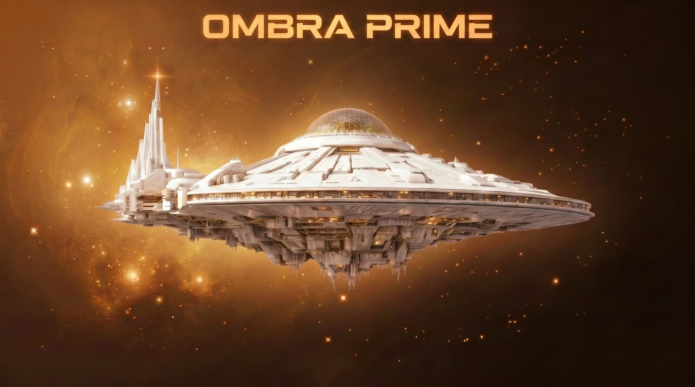

Alexander Atreus
Kapten
Leder navigationen. Skeppet rör sig på hans ord — men bara skeppet.

Moderskeppet
Ett diskusformat skepp, nästan sjutton kilometer brett. Hundra tusen människor i tredje generationen ombord, på väg för att blåsa liv i döda världar. Ingen av dem har valt det.
Så byggs världen → Vad som sänds →Ett skepp som blivit en plats
Ombra Prime lämnade jorden för länge sedan. De flesta som lever ombord nu har aldrig sett en planet — Jorden är något deras far- och morföräldrar berättade om. Det finns ingen kontakt utifrån, inga besökare och inga nyheter från någon annanstans. Ingen kan lämna skeppet.
Men skeppet är på väg någonstans, för att göra något. Ombra Prime är det första i sitt slag: ett moderskepp som bär The Breather, tekniken som får döda världar att leva. Skeppet sprider syntetisk atmosfär och startar ekosystem på planeter som saknar båda. Under kupolen i The Pearl växer det som ska planteras där — träd, gräs, djur och arter som gjorts för att klara främmande jord.
Skeppet är enormt, gammalt och i grunden vänligt. Skrovet är delvis levande och läker sig självt, långsamt. Dagsljuset under kupolen är en konvention, inte en naturlag. Det som skaver är inte fara utan inneslutning: hundra tusen människor i en burk som ingen av dem har valt.
Det här är vardagsnära science fiction. Ett trasigt filter i matproduktionen är en bättre historia än en explosion, och ingen ombord är skurk — alla har ett skäl.
Uppifrån och ner, framifrån och bak
Biosfär och genbank, under kupolen. Här föds Vitalis. Strikt tillträde.
Navigation och kommando. Glas överallt.
Mykologi, akvaponik, marikultur. Maten.
Staden. Här bor de hundra tusen.
Transport. Kraftfält håller atmosfären inne.
Industri, och Oris domän. Katedralen ligger här nere.
Hemlig forskning, under Mr. Splendid.
Terraformingsmotorn, och Hjärtkammaren där The Eternal Dreamers sover. Skeppets syfte — maskinen skeppet byggdes runt.
Underhållstunnlarna som förbinder allt, och hänger som stalaktiter ut i tomrummet under skeppet. Ingen sektor når en annan utan dem.
Ingen tar sig mellan sektorer på minuter. En resa från Metropolis till The Spire är en resa, inte en promenad.
Och alla tre vet om det
Kapten
Leder navigationen. Skeppet rör sig på hans ord — men bara skeppet.
Ägare
Kontrollerar forskningen i The Spire. Han tror att han räddar mänskligheten. Det gör han möjligen också.
Skeppets medvetande
Driver systemen från Katedralen, djupt nere i The Crypt. Hon ljuger inte, men hon berättar inte allt. Ingen människa förstår längre fullt ut vad hon bygger där nere.
Ingen av dem kan agera helt utan de andra. Makten ombord är delad och otydlig, och det är inte ett fel i systemet — det är systemet.
Och, viktigare, vad den inte kan
Livsenergin som föds i The Pearls ekosystem och leds genom skeppet. Den kan mätas, ledas, lagras — och ta slut.
Läka människor, återuppliva döda eller förutsäga framtiden — vad Vitae Cultus än påstår. Vitalis är biologi, inte magi.
Terraformera döda världar genom att sprida syntetisk atmosfär och starta ekosystem.
Gå fort. Processen tar årtionden. Den kräver gravitation och ett magnetfält, den fungerar inte mot en levande värld, och den kan inte köras medan skeppet rör sig.
Läka sig självt. Skrovet är delvis levande och lagar sina egna skador med näring ur Vitalis-flödet.
Hinna med. Läkningen tar dagar till veckor, och ett hål som är större än myceliet orkar är fortfarande ett hål.
Styra livsuppehållande system, bygga robotar, underhålla skeppet — och vägra, missförstå och tiga.
Ta över en kropp eller läsa tankar. Hon är obehaglig genom att vara moderlig, inte genom att hota.
Det finns ingen överljusfart, ingen teleportering, ingen tidsresa och ingen telepati. Allt som verkar övernaturligt har en teknisk eller biologisk förklaring — även när ingen i scenen känner till den.
Vad som är självklart för dem
Live, medan den skrivs
Världen ovanför är inte skriven i förväg. Den simuleras — dygn för dygn, av riktiga sensorer i ett riktigt rum.
Så byggs världen → Vad som sänds →